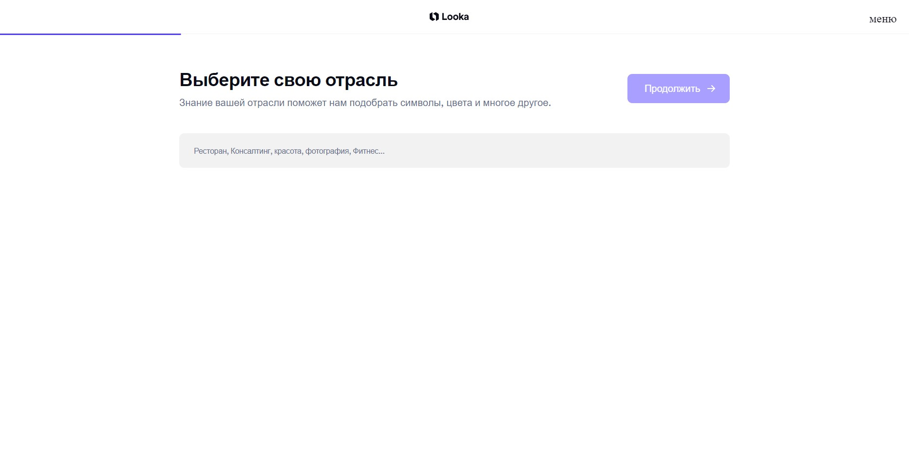

Looka
Looka - это генератор логотипов по описанию. На основе описания компании, ее сферы деятельности, а также предпочтений пользователя нейросеть предлагает варианты брендинга. Платформа также предоставляет различные инструменты для дизайна, в том числе и готовые шаблоны, чтобы компания могла отразить свою визуальную идентичность в маркетинговых материалах.
